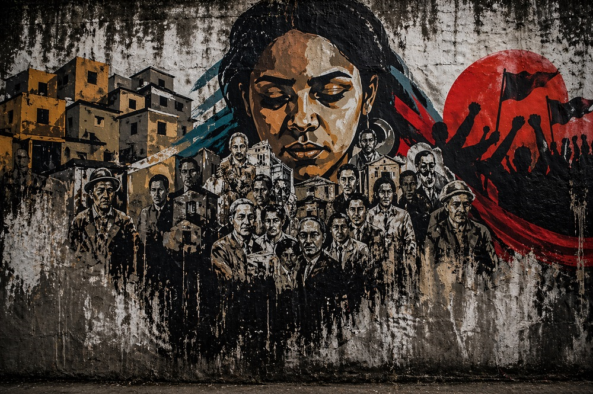

Home > Blog The Log of a Librarian > Community-Centered Librarianship With a Decolonial Turn (03)
Community-Centered Librarianship With a Decolonial Turn (03)
Memories That Fight Back
(Community) Libraries as Trenches for Remembering Otherwise
This post is part of a series that reclaims community-centered librarianship from its institutional distortions, returning it to its roots in struggle, mutual aid, and collective survival. It treats libraries not as neutral services but as contested infrastructures shaped by power, resistance, and memory, and explores librarianship as solidarity work grounded in real communities, real conflicts, and the ongoing tension between institutional control and collective autonomy. Check all the posts in this section's index.
Memory Beyond Preservation
In institutional discourse, memory is usually treated as something to be preserved. Libraries (and archives, and museums, and similar spaces) collect it, organize it, and make it accessible. The emphasis falls on continuity, stability, and care.
But that view is too narrow.
What institutions preserve is never simply "the past." It is a selected, classified, and mediated version of it. Some experiences enter the record; others remain fragmented, excluded, or illegible within existing systems. In that sense, memory is not only preservation. It is also a terrain of struggle.
This becomes especially visible in community-centered librarianship, where memory is rarely an abstract concern. It is tied to concrete histories of dispossession, migration, repression, organizing, survival, and resistance.
Community Libraries and the Work of Remembering
Community libraries do not usually emerge in neutral environments. They often appear where official institutions have failed, withdrawn, or never truly served the people around them.
Under those conditions, memory work is not secondary. It is part of the reason these libraries exist.
They preserve local histories that would otherwise remain undocumented. They sustain oral knowledge, neighborhood narratives, organizational records, testimonies, and ephemeral materials that formal institutions often ignore. They create continuity where disruption has been the norm.
This is not simply a matter of filling gaps in the historical record. Community libraries do not just add missing content to an already legitimate archive. They often preserve forms of memory that challenge the legitimacy of the official story itself.
Against Official Memory
Every dominant institution produces a version of the past that appears coherent and authoritative. That coherence depends not only on what is included, but also on what is left aside.
Community libraries work from a different position.
They are often closer to the experiences that official narratives minimize: forced displacement, labor struggle, police violence, informal settlement, linguistic marginalization, erased local leadership, everyday forms of mutual aid... Because of that proximity, they can function as places where other versions of the past remain active.
This does not mean that community libraries automatically produce a pure or complete truth. They also select, interpret, and frame. But they do so from within the social fabric that dominant institutions usually observe from above.
That difference matters.
Memory as Counter-Force
In community-centered librarianship, memory is not only retrospective. It is practical.
It helps communities explain how they arrived where they are. It preserves evidence of harm. It keeps track of struggles, alliances, and losses. It protects experiences that would otherwise be denied or dissolved. It gives historical depth to present demands.
Under such conditions, memory becomes a counter-force.
Not because it is romantic, and not because every act of remembering is emancipatory, but because it can interrupt official versions of reality. It can expose erasure, sustain continuity, and provide communities with narratives that are not imposed from outside.
A community library, then, is not only a place that stores documents. It can become a space where a sort of "collective truth" can be assembled, defended, and transmitted.
The Limits of Institutional Recognition
Once these memories become visible, hegemonic institutions often try to absorb them.
They may recognize them as "heritage," "diversity," or "local culture," while stripping away the conflicts that gave them meaning. What was once a living, situated memory can be reformatted as harmless content.
This is one of the central tensions for community libraries. If they seek recognition, support, or integration, they risk losing the force of the memories they hold. If they remain entirely outside institutional frameworks, they may lack resources, protection, or continuity.
There is no easy solution to that tension. But ignoring it produces a false picture of what community memory work involves.
Libraries as Sites of Collective Voice
Community-centered librarianship is not defined only by proximity, participation, or local relevance. It is also defined by the capacity to hold and activate memories that matter to a community's survival and self-understanding.
That work is not neutral. It never has been.
When community libraries preserve what official systems neglect, when they sustain memories of struggle, and when they make those memories available for collective use, they do more than provide access to information. They create conditions in which dominant narratives can be confronted.
In that sense, memory in community libraries is not just archival material.
It is social knowledge under pressure. And sometimes, it is one of the few places from which a community can still speak in its own name.